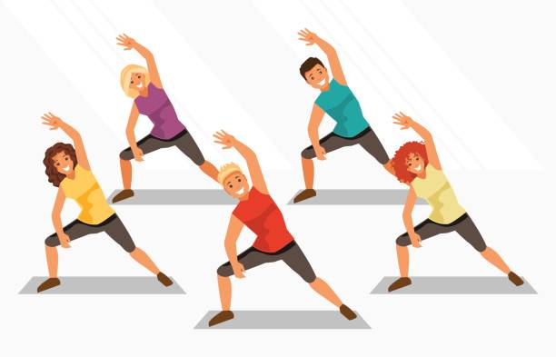
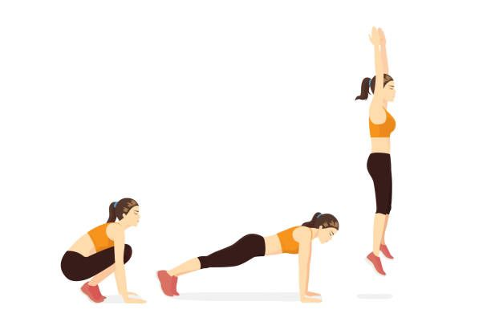
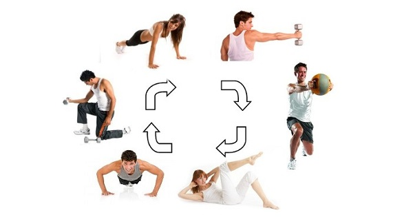
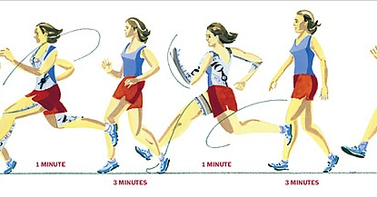
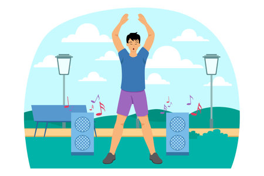
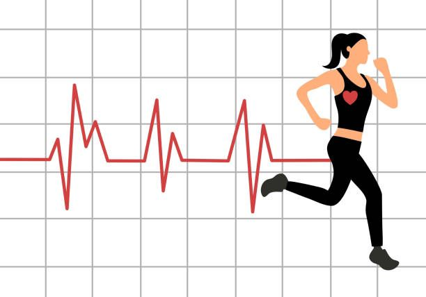
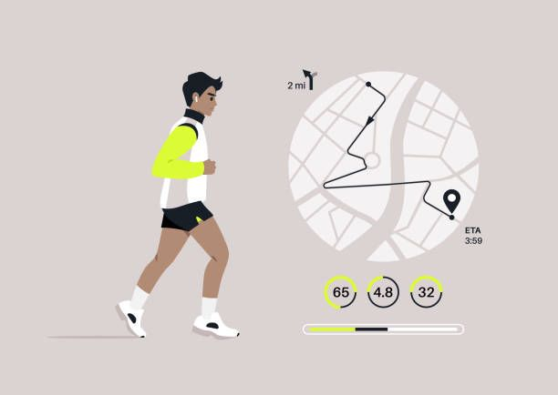
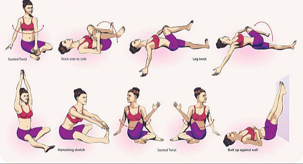

1. Entrenamiento Aeróbico Continuo
Este método consiste en realizar actividades aeróbicas de manera continua y a una intensidad moderada durante un período prolongado. Ejemplos incluyen correr, nadar, andar en bicicleta, o caminar a paso ligero. Este tipo de entrenamiento ayuda a mejorar la capacidad del corazón y los pulmones para suministrar oxígeno a los músculos, aumentando así la resistencia cardiovascular.
Frecuencia: 3-5 veces por semana.
Duración: 30-60 minutos por sesión.
Intensidad: 60-75% de la frecuencia cardíaca máxima.
2. Entrenamiento Interválico de Alta Intensidad (HIIT)
El entrenamiento interválico de alta intensidad (HIIT) alterna períodos de ejercicio de alta intensidad con períodos de descanso o ejercicio de baja intensidad. HIIT es eficaz para mejorar la resistencia cardiovascular en un período de tiempo más corto en comparación con el entrenamiento continuo.
Frecuencia: 2-3 veces por semana.
Duración: 20-30 minutos por sesión.
Estructura: Intervalos de 30 segundos a 2 minutos de alta intensidad, seguidos de 1-2 minutos de recuperación.
3. Entrenamiento en Circuitos Cardiovasculares
El entrenamiento en circuitos combina ejercicios aeróbicos y de resistencia en una sesión continua, con poco o ningún descanso entre ejercicios. Este método no solo mejora la resistencia cardiovascular, sino que también fortalece los músculos y mejora la coordinación.
Frecuencia: 2-3 veces por semana.
Duración: 30-45 minutos por sesión.
Intensidad: Ejercicios variados que elevan la frecuencia cardíaca, como saltar la cuerda, burpees, jumping jacks, y ejercicios de fuerza con peso corporal.
4. Ejercicio en Zona Aeróbica Moderada (Fartlek)
El método Fartlek, o "juego de velocidad", combina entrenamiento continuo y entrenamiento interválico, alternando entre ritmos lentos y rápidos en una misma sesión. Es una forma flexible de mejorar la resistencia cardiovascular, ya que se adapta al nivel de esfuerzo del individuo.
Frecuencia: 1-2 veces por semana.
Duración: 30-60 minutos por sesión.
Intensidad: Varía entre baja y alta, ajustada al nivel de forma física de la persona.
5. Actividades Recreativas Aeróbicas
Participar en deportes y actividades recreativas como el baile, el senderismo, el remo, o el ciclismo de montaña puede ser una forma divertida y motivadora de mejorar la resistencia cardiovascular. Estas actividades proporcionan un ejercicio aeróbico continuo que es sostenible y disfrutable a largo plazo.
Frecuencia: 2-4 veces por semana.
Duración: 45-90 minutos por sesión.
Intensidad: Dependiendo de la actividad, puede variar de moderada a alta.
6. Ejercicios en Grupo o Clases de Fitness Aeróbico

Participar en clases de fitness grupales como zumba, spinning, o clases de step puede aumentar la motivación y el compromiso. Estas clases suelen estar diseñadas para mantener la frecuencia cardíaca elevada durante un período prolongado, mejorando así la resistencia cardiovascular.
Frecuencia: 2-4 veces por semana.
Duración: 45-60 minutos por sesión.
Intensidad: Moderada a alta, dependiendo del tipo de clase.
7. Entrenamiento de Resistencia con Componentes Cardiovasculares
Combinar el entrenamiento de fuerza con ejercicios cardiovasculares, como realizar superseries que incluyen ejercicios aeróbicos (como saltar la cuerda o correr en el lugar) entre series de levantamiento de pesas, puede mejorar tanto la fuerza muscular como la resistencia cardiovascular.
Frecuencia: 2-3 veces por semana.
Duración: 30-60 minutos por sesión.
Intensidad: Alternar ejercicios de fuerza con intervalos cardiovasculares de moderada a alta intensidad.
8. Entrenamiento de Resistencia Acuático
Realizar ejercicios en el agua, como natación, aquafitness, o correr en el agua, es una excelente forma de mejorar la resistencia cardiovascular sin impactar las articulaciones. Este método es particularmente beneficioso para personas con lesiones o condiciones que limitan el ejercicio de alto impacto.
Frecuencia: 2-3 veces por semana.
Duración: 30-45 minutos por sesión.
Intensidad: Moderada a alta, dependiendo del ejercicio acuático.
9. Caminar a Paso Rápido
Caminar es una forma sencilla y accesible de mejorar la resistencia cardiovascular, especialmente para principiantes o personas mayores. Aumentar gradualmente la velocidad y la duración de las caminatas puede ayudar a mejorar la capacidad cardiovascular.
Frecuencia: 5-7 veces por semana.
Duración: 30-60 minutos por sesión.
Intensidad: Moderada, a un ritmo que eleve la frecuencia cardíaca.
10. Yoga Dinámico o Vinyasa Yoga
El yoga dinámico, como el Vinyasa o el Power Yoga, incorpora movimientos fluidos que pueden elevar la frecuencia cardíaca y mejorar la resistencia cardiovascular. Este método también mejora la flexibilidad, la fuerza y el equilibrio, lo cual es beneficioso para la salud general.
Frecuencia: 2-3 veces por semana.
Duración: 45-60 minutos por sesión.
Intensidad: Moderada, con movimientos continuos que elevan la frecuencia cardíaca.